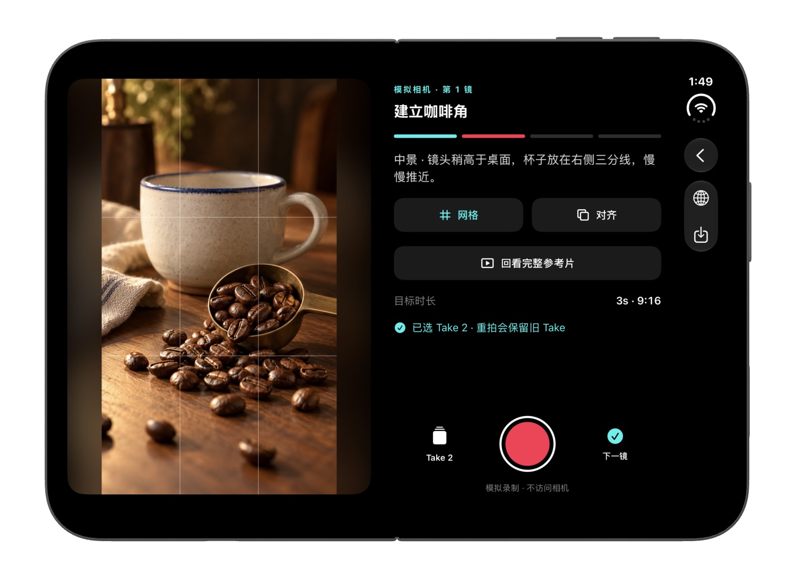
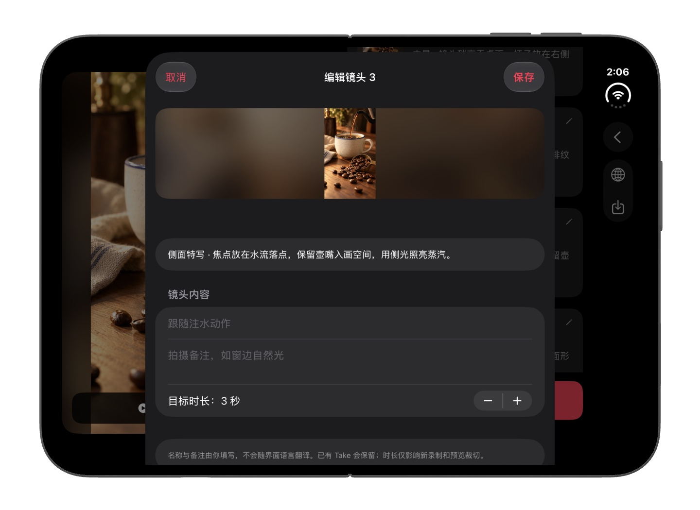
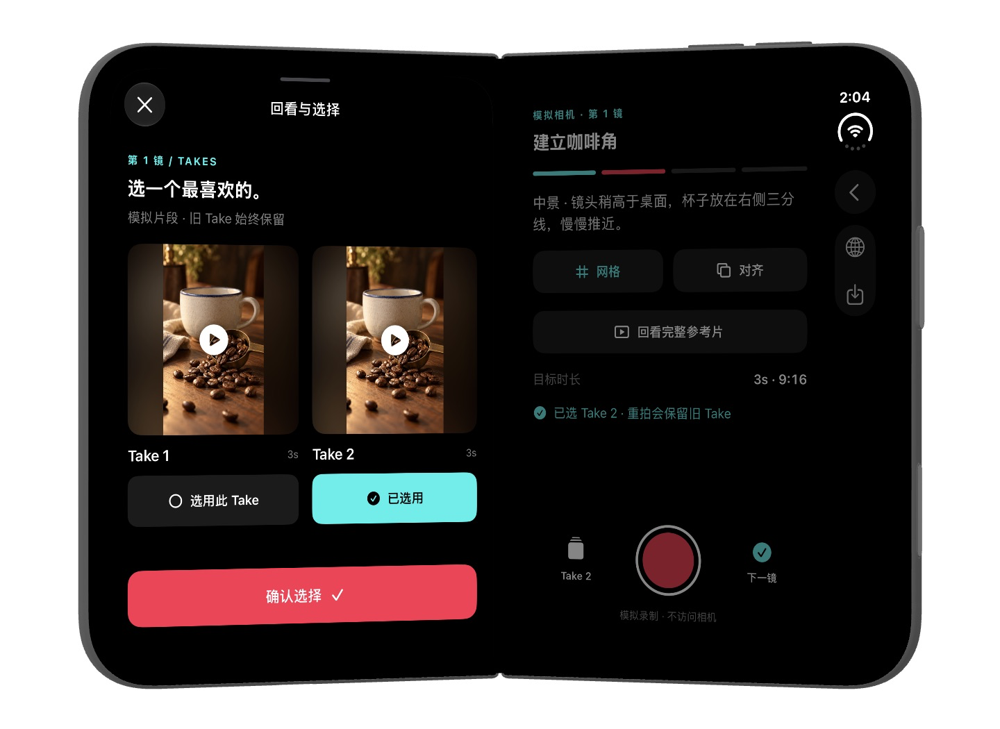
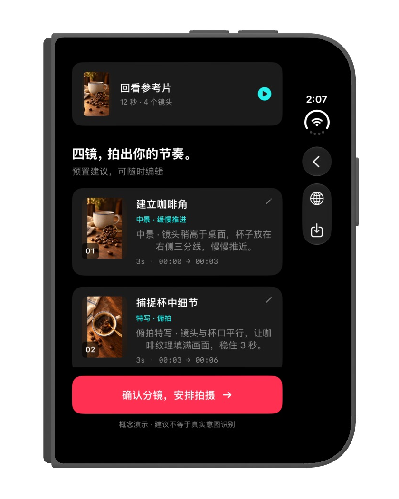

01
看懂镜头
当前卡点
反复回看，还是靠猜
轻量 AI 分镜 · 设计方向
看清结构，调整自己的计划


一段真实的创作，
一份可以照着开始的拍摄计划。
看懂镜头 · 拍时有提示 · 讲完自己的故事
设计方向：轻量 AI 在后台识别镜头切换，整理可编辑的镜头结构，让注意力留在创作上。
当前卡点
反复回看，还是靠猜
轻量 AI 分镜 · 设计方向
看清结构，调整自己的计划
当前卡点
相机打开，却忘了怎么拍
设计目标
一镜一提示，拍完逐个确认
当前卡点
拍完才发现，少了一个镜头
设计目标
模拟成片用自己的素材，把故事串完整
从「摄影最大的遗憾」出发，
练习记录你自己的毕业记忆。
LIVE PROTOTYPE • 点击手机内的按钮开始
把取景、镜头计划与回看，放进不同的屏幕形态。
Device Hub · 原生 App 运行截图

左侧专注画面，右侧查看提示、切换 Take 与录制。
镜头列表保留拍摄进度，也能调整拍摄顺序。

调整镜头内容、拍摄备注与目标时长。

比较已拍的 Take，保留想要的版本。

回看参考与镜头建议，确认后进入拍摄安排。
从原片手动选出的四个片段，
不是自动切分结果。建议拍法与时长均可修改。
 01 / ESTABLISH
01 / ESTABLISH原片 00:00 · 人物互动
建议练习 3 秒，留住自然的情绪。
 02 / DETAIL
02 / DETAIL原片 00:06 · 拍摄现场
建议练习 3 秒，让动作进入画面。
03 / ACTION原片 00:18 · 城市环境
建议练习 4 秒，给故事一点呼吸。
 04 / PAYOFF
04 / PAYOFF原片 00:33 · 毕业人像
建议练习 3 秒，以人物收束故事。
从视频的分享面板进入「跟拍学习」，不另建一个需要寻找的工作台。
镜头顺序、时长和拍摄提示可编辑。原片始终能回看；分析失败可以重试或使用预设。
旧版本先保留，新版本确认后才替换。每个镜头独立完成，离开也能恢复本地草稿。
| 已有方向 | 主要关注 | 本概念的探索边界 |
|---|---|---|
| Duet / Stitch / Add Yours | 与现有内容互动、接续或参与话题 | 参考 → 可编辑的现实拍摄步骤 → 用自己的素材完成独立作品。 能力存在重叠；不是「市场空白」声明。 |
| Studio AutoCut / 剪辑模板 | 组织、编辑已有素材 | |
| CapCut Storyboards / AI 创意工具 | 计划、脚本与创作辅助 |
ShotPAI 中 TransNetV2 / Core ML 的镜头切分思路可用于候选边界。切分≠理解拍摄意图；语义提示仍需要独立模型与人工确认。
此页面使用创作者授权的真实视频，镜头窗口和提示由人工选定。Take、拍摄和发布仍为模拟；没有接入 TikTok、AI 推理或真实摄像头。原有 App 未在此修改。
下一轮邀请新手完成相同拍摄任务，观察首次开拍时间、独立完成率、提示理解和成片结构。先验证行为，再讨论增长。
我们收集匿名浏览汇总；仅在你主动开启后，网站作者可查看本次访问在各区块的停留明细。明细仅显示最近24小时内尚未过期的记录，不跨访问识别人；汇总报表覆盖最近90天，过期记录在后续请求时清理。不使用追踪 Cookie、指纹或跨访问标识。托管服务商可能单独处理安全 Cookie 与网络日志。你可关闭统计，或单独关闭本次访问明细。We collect anonymous viewing totals. Only if you enable it, the site owner can view this visit’s time in each section. Details show unexpired records from the last 24 hours and do not identify people across visits. Aggregate reports cover the last 90 days; expired records are cleared on subsequent requests. No tracking cookies, fingerprinting, or cross-visit identifiers. The hosting provider may process security cookies and network logs separately. You can turn off analytics or this visit’s details.